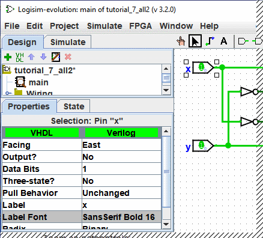

上一节: 工具栏
属性表
许多组件都有属性，这些属性用于配置组件的行为或显示方式。 属性表用于查看和显示组件的属性值。
要选择要查看的组件属性，请使用编辑工具单击该组件 ( )。 您还可以右键单击或按住Control键单击组件，然后从弹出菜单中选择“显示属性”。 另外，通过 Poke 工具操作组件 (
)。 您还可以右键单击或按住Control键单击组件，然后从弹出菜单中选择“显示属性”。 另外，通过 Poke 工具操作组件 ( ) 或 Text 工具 () 将显示该组件的属性。
) 或 Text 工具 () 将显示该组件的属性。
下面的屏幕截图演示了选择 XOR 电路的上部输入并向下滚动以查看 Label Font 属性后的情况。

要修改属性值，请单击该值。 修改属性的界面将取决于您要更改的属性； 对于Label Font属性，将出现一个对话框用于选择新字体； 但某些属性（例如Label）将允许您将值编辑为文本字段，而其他属性（例如Label Location）将显示一个下拉列表 - 向下菜单，从中选择值。
每个组件类型都有一组不同的属性； 要了解它们的含义，请参阅库参考中的相关文档。
如果您使用编辑工具选择了多个组件 ( ），则属性表将显示所有选定组件（不包括任何电线）共享的属性。 如果所选组件并非全部具有相同的属性值，则显示的值将为空白。 您可以使用属性表一次性更改所有选定组件的属性值。
），则属性表将显示所有选定组件（不包括任何电线）共享的属性。 如果所选组件并非全部具有相同的属性值，则显示的值将为空白。 您可以使用属性表一次性更改所有选定组件的属性值。
下一节: 工具和组件属性.